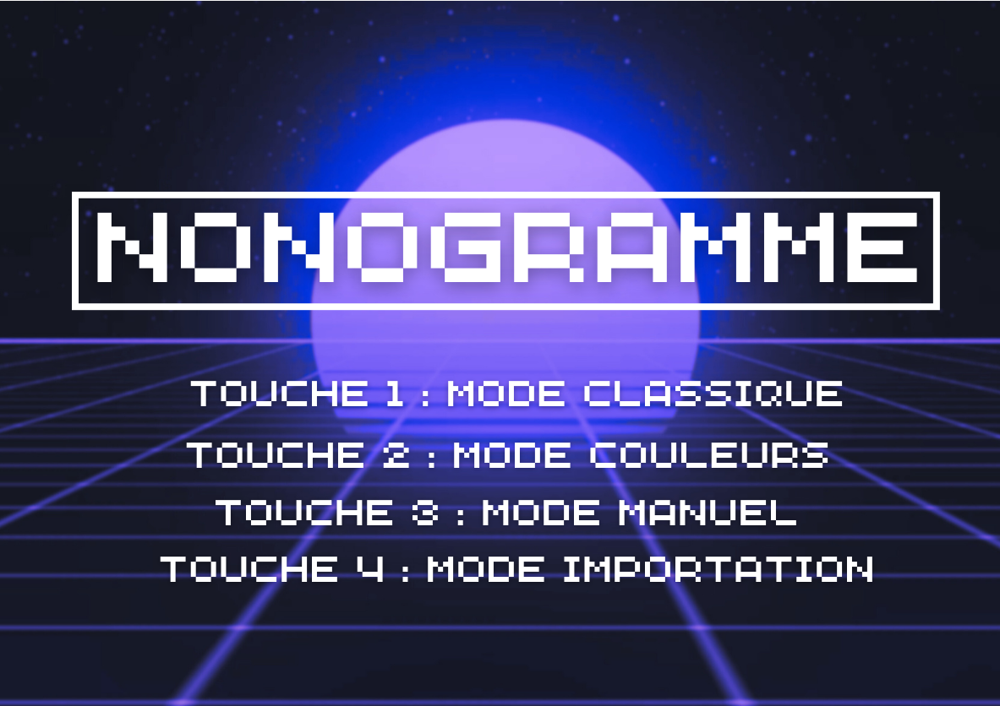
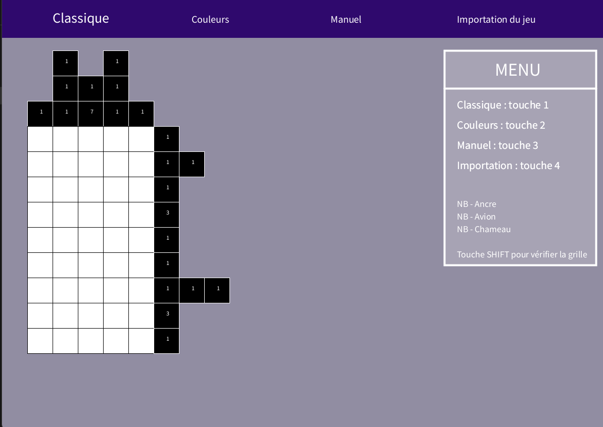
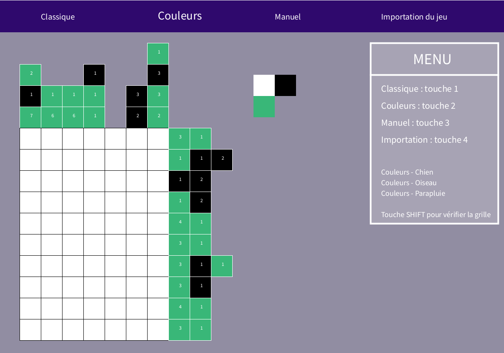
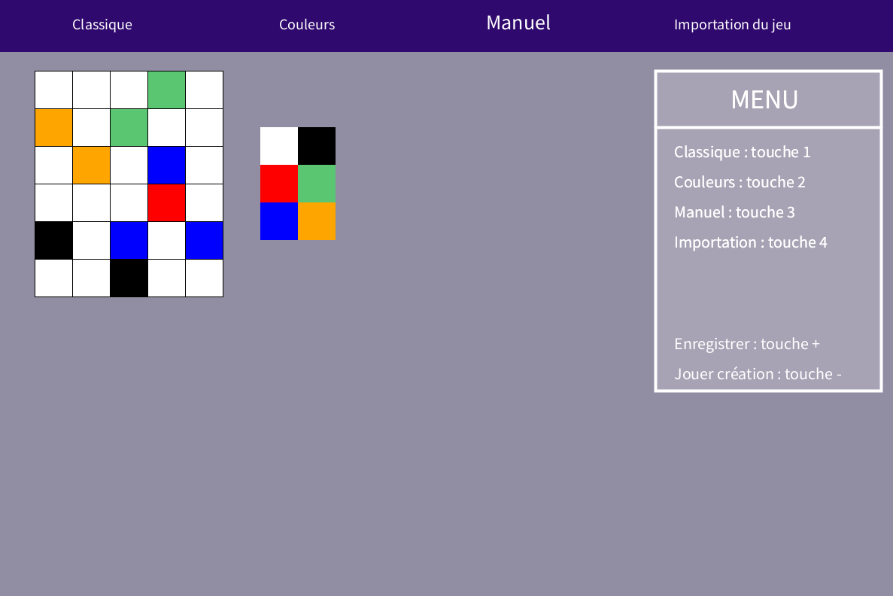

Nonogramme




Avec deux collèges nous avons réalisé un Nonogramme en Java avec 3 modes, le mode noir et blanc, couleur et Manuel. Je me suis occupé de la page d'accueil, des palettes de couleurs pour le mode couleur et Manuel, importer les différents fichiers dessin et j'ai également aidé mes collègues pour la création des grills et des légendes et la gestion d'erreurs au moment de la validation du dessin. Ce projet a duré 1 semaine et il m'a permis de renforcer mes compétences sur le graphique, la gestion du graphique et l'importation de fichier.